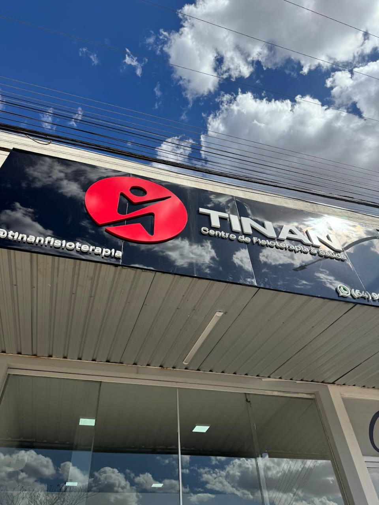
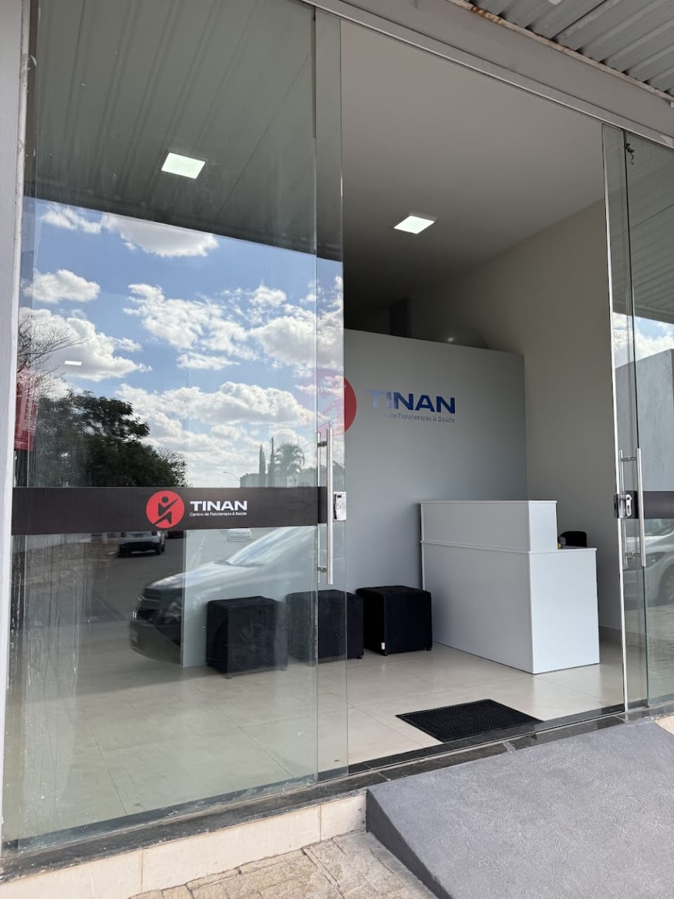
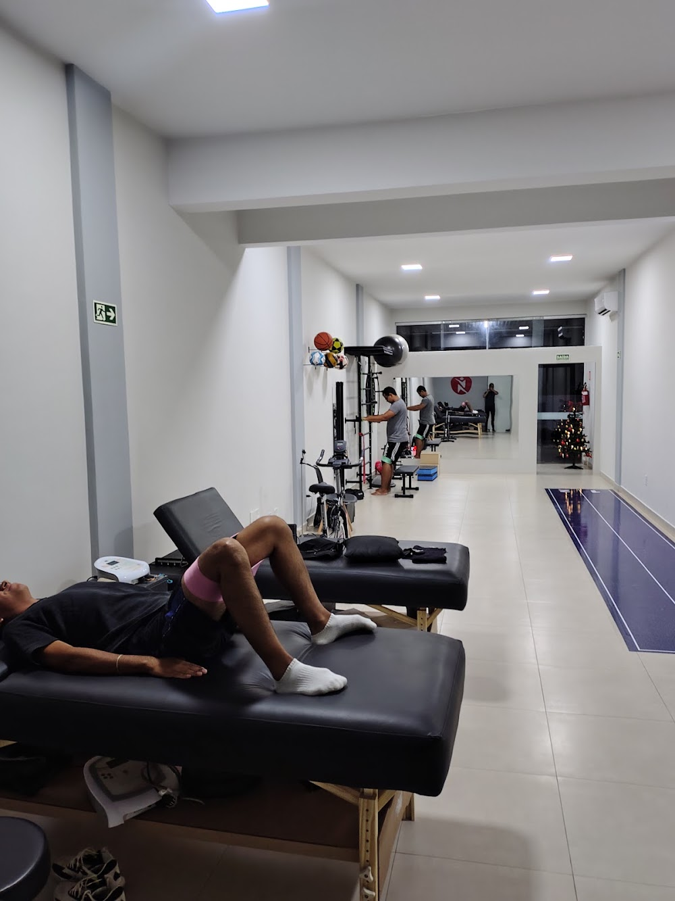
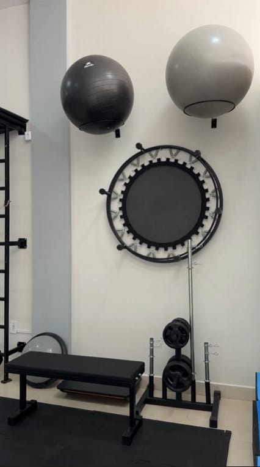
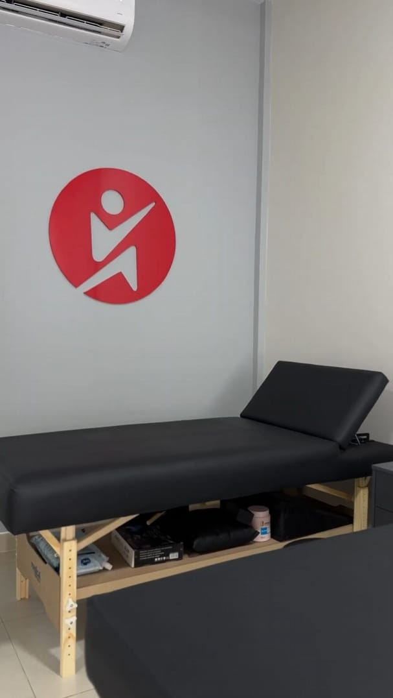
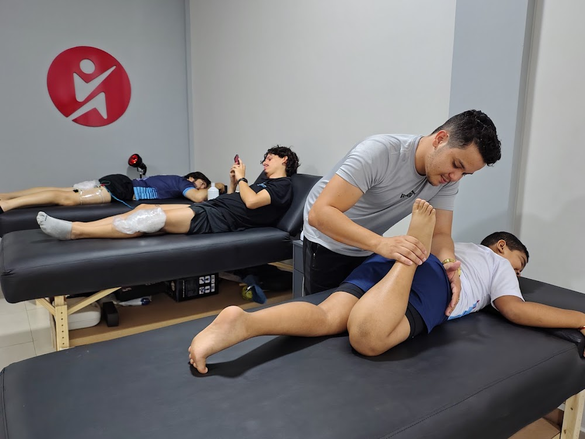
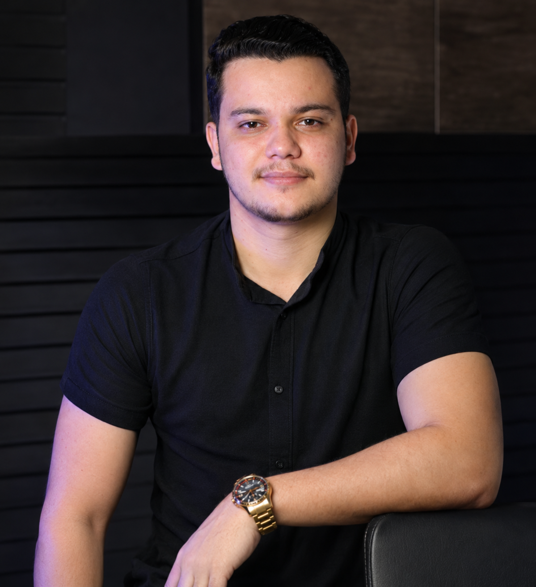

Fisioterapia e saúde integrada em Caldas Novas, com atendimento humanizado e estrutura pensada para a sua recuperação.
Agende sua avaliaçãoAcreditamos que cada corpo tem sua própria história — e merece um cuidado que respeite esse tempo.
A TINAN nasceu em Caldas Novas com uma ideia simples: reunir, num só lugar, profissionais que tratam pessoas e não apenas diagnósticos. Somos um centro de fisioterapia e saúde com atendimento em fisioterapia traumato-ortopédica e desportiva, fisioterapia cardiorrespiratória, ortopedia com osteopatia e nutrição clínica, materno-infantil e esportiva.
Nossa estrutura foi pensada para que o paciente se sinta acolhido desde a chegada: salas equipadas, ambiente tranquilo e uma equipe que conversa entre si. Aqui, o fisioterapeuta sabe o que o nutricionista está acompanhando, e o cuidado não se perde entre uma especialidade e outra.
Trabalhamos com avaliação criteriosa, plano de tratamento explicado com clareza e acompanhamento próximo. Cada pessoa chega com uma história diferente, e é a partir dela que construímos o caminho de recuperação.

Ambientes preparados para acolher, tratar e recuperar — com equipamentos e espaços pensados para o seu conforto.





Uma equipe multidisciplinar dedicada a entender o seu caso e construir o melhor caminho de recuperação.

Fisioterapeuta
CREFITO 395766-F
Fisioterapia Traumato-Ortopédica e Desportiva
Ver perfil →Nutricionista
CRN 26281-P
Nutrição Clínica, Materno-Infantil e Esportiva
Ver perfil →Fisioterapeuta
CREFITO 370442-F
Fisioterapia Cardiorrespiratória
Ver perfil →Fisioterapeuta
CREFITO 433876-F
Fisioterapia Ortopédica e Osteopatia
Ver perfil →Venha nos visitar ou veja o que nossos pacientes dizem sobre o atendimento.
Rua 8, Quadra 32, Lote 4, Sala 3 — Itaici 2, Caldas Novas — GO
WhatsApp: (64) 99239-9515 · E-mail: tinanfisioterapia@gmail.com
Instagram: @tinanfisioterapia · Horário: 08:00 às 20:00